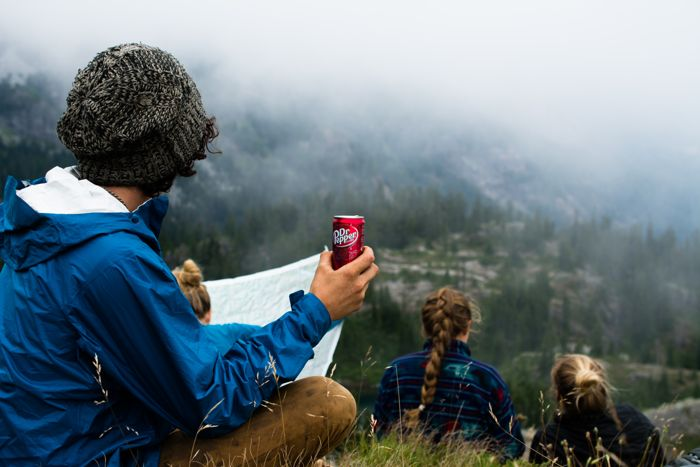
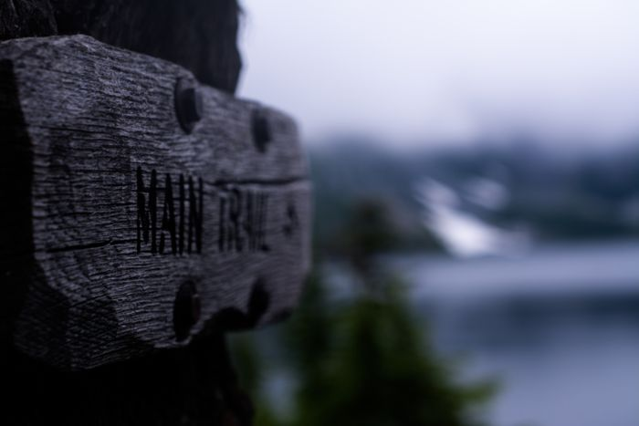
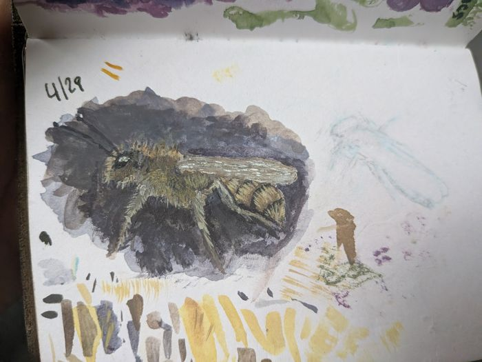

<title>Charlie Nolan</title>
<meta name="claude:viewport-fit-sides" content="cover">
<meta name="description" content="Charlie Nolan: mechanic in Shoreline, WA, and builder of open-source car diagnostic tools.">
<link rel="stylesheet" href="https://fonts.googleapis.com/css2?family=Bricolage+Grotesque:opsz,wght@12..96,600;12..96,800&family=Instrument+Sans:wght@400;500;600&family=JetBrains+Mono:wght@400;500&display=swap">
<style>
  /* Layout: a maker's spec sheet. Left-aligned single column, each project reads like a datasheet entry
     with a photo and a short table of real specs. Accent is anodized-aluminum blue, one warm tag color for status. */
  :root {
    --bg: #eef0f1;
    --paper: #fbfcfc;
    --fg: #141b22;
    --muted: #55606b;
    --rule: #cfd5da;
    --accent: #2453c7;
    --accent-soft: #dfe7fa;
    --tag: #b4530f;
    --display: "Bricolage Grotesque", "Arial Black", system-ui, sans-serif;
    --body: "Instrument Sans", "Helvetica Neue", Arial, sans-serif;
    --mono: "JetBrains Mono", ui-monospace, Menlo, Consolas, monospace;
  }
  @media (prefers-color-scheme: dark) {
    :root:not([data-theme="light"]) {
      --bg: #11161b; --paper: #182027; --fg: #e8ecef; --muted: #9aa6b1; --rule: #2c3640;
      --accent: #7fa4ff; --accent-soft: #1f2c4a; --tag: #f0a060; color-scheme: dark;
    }
  }
  :root[data-theme="dark"] {
    --bg: #11161b; --paper: #182027; --fg: #e8ecef; --muted: #9aa6b1; --rule: #2c3640;
    --accent: #7fa4ff; --accent-soft: #1f2c4a; --tag: #f0a060; color-scheme: dark;
  }
  @media (prefers-reduced-motion: reduce) { * { transition: none !important; } }

  body { background: var(--bg); color: var(--fg); font-family: var(--body); font-size: 17px; line-height: 1.55; }
  .wrap { max-width: 880px; margin: 0 auto; padding-left: max(16px, env(safe-area-inset-left, 0px)); padding-right: max(16px, env(safe-area-inset-right, 0px)); }
  h1, h2, h3 { font-family: var(--display); line-height: 1.05; margin: 0; text-wrap: balance; }
  h2 { font-size: clamp(1.8rem, 5vw, 2.4rem); font-weight: 800; letter-spacing: -.01em; }
  h3 { font-size: 1.5rem; font-weight: 800; }
  p { margin: 0; max-width: 62ch; }
  a { color: var(--accent); text-underline-offset: 3px; }
  a:focus-visible, button:focus-visible { outline: 3px solid var(--accent); outline-offset: 2px; }
  .label { font-family: var(--mono); font-size: .78rem; letter-spacing: .08em; text-transform: uppercase; color: var(--muted); }
  section { padding-block: 48px; border-top: 1px solid var(--rule); display: grid; gap: 20px; }

  /* header */
  header .wrap { display: flex; justify-content: space-between; align-items: baseline; gap: 8px 20px; flex-wrap: wrap; padding-block: 20px; }
  .name { font-family: var(--display); font-weight: 800; font-size: 1.3rem; text-decoration: none; color: var(--fg); }
  nav { display: flex; flex-wrap: wrap; gap: 4px 16px; font-size: .95rem; }
  nav a { color: var(--muted); text-decoration: none; }
  nav a:hover { color: var(--accent); }

  /* hero */
  .hero { border-top: 0; padding-block: 32px 48px; gap: 18px; }
  .hero h1 { font-size: clamp(2.5rem, 8vw, 4.4rem); font-weight: 800; letter-spacing: -.02em; }
  .hero h1 em { font-style: normal; color: var(--accent); }
  .lede { font-size: 1.2rem; }
  .facts { display: flex; flex-wrap: wrap; gap: 8px; padding: 0; margin: 0; list-style: none; }
  .facts li { font-family: var(--mono); font-size: .82rem; background: var(--paper); border: 1px solid var(--rule); padding: 4px 10px; }

  /* projects: datasheet entries */
  .project { display: grid; grid-template-columns: minmax(0, 1fr) minmax(0, 1.1fr); gap: 24px; align-items: start; background: var(--paper); border: 1px solid var(--rule); padding: 20px; }
  .project > * { min-width: 0; }
  .project .shot { display: grid; gap: 8px; }
  .project img { width: 100%; height: auto; display: block; border: 1px solid var(--rule); background: var(--bg); }
  .project .thumbs { display: grid; grid-template-columns: 1fr 1fr; gap: 8px; }
  .project .thumbs img { aspect-ratio: 4 / 3; object-fit: cover; }
  .project .copy { display: grid; gap: 14px; align-content: start; }
  .status { justify-self: start; font-family: var(--mono); font-size: .75rem; letter-spacing: .06em; text-transform: uppercase; color: var(--tag); border: 1px solid currentColor; padding: 2px 8px; }
  .spec { width: 100%; border-collapse: collapse; font-size: .92rem; }
  .spec th, .spec td { text-align: left; padding: 7px 0; border-top: 1px solid var(--rule); vertical-align: top; }
  .spec th { font-family: var(--mono); font-weight: 400; font-size: .76rem; letter-spacing: .06em; text-transform: uppercase; color: var(--muted); width: 38%; padding-right: 12px; }
  .spec td { font-variant-numeric: tabular-nums; }
  .links { display: flex; flex-wrap: wrap; gap: 8px 18px; font-weight: 600; }
  @media (max-width: 700px) { .project { grid-template-columns: 1fr; } }

  /* github */
  .repos { display: grid; grid-template-columns: repeat(2, minmax(0, 1fr)); gap: 12px; }
  .repo { display: grid; gap: 6px; padding: 16px; border: 1px solid var(--rule); background: var(--paper); text-decoration: none; color: var(--fg); }
  .repo:hover { border-color: var(--accent); }
  .repo b { font-family: var(--mono); font-weight: 500; color: var(--accent); }
  .repo span { color: var(--muted); font-size: .93rem; }
  @media (max-width: 560px) { .repos { grid-template-columns: 1fr; } }

  /* galleries */
  .gallery { display: grid; grid-template-columns: repeat(3, minmax(0, 1fr)); gap: 10px; }
  .gallery figure { margin: 0; display: grid; gap: 6px; }
  .gallery img { width: 100%; aspect-ratio: 1; object-fit: cover; display: block; }
  .gallery figcaption { font-size: .85rem; color: var(--muted); }
  @media (max-width: 560px) { .gallery { grid-template-columns: repeat(2, minmax(0, 1fr)); } }
  .empty { border: 1px dashed var(--rule); padding: 28px 20px; color: var(--muted); display: grid; gap: 6px; }
  .empty b { color: var(--fg); font-weight: 600; }

  /* blog */
  .posts { display: grid; gap: 0; padding: 0; margin: 0; list-style: none; }
  .posts li { display: grid; grid-template-columns: 7.5em 1fr; gap: 12px; padding-block: 12px; border-top: 1px solid var(--rule); }
  .posts time { font-family: var(--mono); font-size: .85rem; color: var(--muted); padding-top: 2px; }
  @media (max-width: 480px) { .posts li { grid-template-columns: 1fr; gap: 2px; } }

  /* mechanic band */
  .shop { background: var(--accent-soft); border: 1px solid var(--rule); padding: 24px; display: grid; gap: 12px; }
  .btn { justify-self: start; display: inline-block; background: var(--accent); color: var(--paper); font-weight: 600; padding: 10px 18px; text-decoration: none; }

  /* interests (generated from the Obsidian vault) */
  .icards { display: grid; grid-template-columns: repeat(auto-fill, minmax(min(100%, 250px), 1fr)); gap: 12px; }
  .card { display: grid; gap: 8px; align-content: start; padding: 16px; background: var(--paper); border: 1px solid var(--rule); text-decoration: none; color: var(--fg); min-width: 0; }
  .card:hover { border-color: var(--accent); }
  .card h3 { font-size: 1.2rem; }
  .card p { color: var(--muted); font-size: .94rem; }
  .tagnav { display: flex; flex-wrap: wrap; gap: 6px; margin-bottom: 4px; }
  .tagnav a { font-family: var(--mono); font-size: .8rem; text-decoration: none; color: var(--fg); background: var(--paper); border: 1px solid var(--rule); padding: 4px 10px; }
  .tagnav a:hover { border-color: var(--accent); color: var(--accent); }
  .photostrip { display: grid; grid-template-columns: repeat(auto-fill, minmax(min(100%, 200px), 1fr)); gap: 10px; }
  .photo { margin: 0; display: grid; gap: 6px; }
  .photo img { display: block; width: 100%; height: auto; aspect-ratio: 4 / 5; object-fit: cover; border: 1px solid var(--rule); background: var(--paper); }
  .photo figcaption { display: flex; justify-content: space-between; gap: 8px; font-size: .86rem; color: var(--muted); }
  .photo time { font-family: var(--mono); font-size: .74rem; }
  .recipes { display: grid; grid-template-columns: repeat(auto-fill, minmax(min(100%, 180px), 1fr)); gap: 12px; }
  .rtile { display: grid; gap: 8px; text-decoration: none; color: var(--fg); background: var(--paper); border: 1px solid var(--rule); padding: 8px; }
  .rtile:hover { border-color: var(--accent); }
  .rtile img, .rtile .noimg { display: block; width: 100%; aspect-ratio: 4 / 3; object-fit: cover; }
  .rtile .noimg { display: grid; place-items: center; background: var(--accent-soft, #dfe7fa); color: var(--accent); font-family: var(--display); font-size: 2.4rem; font-weight: 800; }
  .rtile b { font-family: var(--display); font-weight: 800; font-size: 1.02rem; line-height: 1.2; padding: 0 2px 4px; }
  .card .tags { display: flex; flex-wrap: wrap; gap: 4px 10px; font-family: var(--mono); font-size: .76rem; color: var(--muted); }
  #interests > a { font-weight: 600; }

  footer .wrap { padding-block: 28px; border-top: 1px solid var(--rule); color: var(--muted); font-size: .9rem; display: flex; flex-wrap: wrap; gap: 6px 20px; }
</style>

<header>
  <div class="wrap">
    <a class="name" href="#top">Charlie Nolan</a>
    <nav aria-label="Sections">
      <!-- nav:start -->
      <a href="#interests">Deep dives</a>
      <a href="#projects">Projects</a>
      <a href="#photography">Photography</a>
      <a href="#paintings">Paintings</a>
      <a href="#recipes">Recipes</a>
      <a href="#how-it-s-made">How it&#x27;s made</a>
      <a href="#code">GitHub</a>
      <a href="#mechanic">Mechanic</a>
      <a href="https://www.instagram.com/cno3117/">Instagram</a>
      <!-- nav:end -->
    </nav>
  </div>
</header>

<main class="wrap" id="top">
  <!-- page:start -->
  <section class="hero"><p class="label">Shoreline, WA</p><h1>Hi, I'm <em>Charlie.</em></h1><p class="lede">Lately I'm into local AI on tiny computers, e-ink gadgets, watercolor, old game cartridges, and cheese that doesn't melt. Some of it turns into open-source projects. Notes on all of it end up here.</p><ul class="facts"><li>Cars</li><li>Electronics</li><li>Local AI</li><li>Retro games</li><li>Food science</li><li>3D printing</li></ul></section>

  <section id="interests"><p class="label">Rabbit holes</p><h2>Deep dives</h2><p>Pulled straight from my notes, so this changes as I go.</p><div class="tagnav" aria-label="Browse by tag"><a href="interests/?tag=3d-printing">#3d-printing</a><a href="interests/?tag=ai">#ai</a><a href="interests/?tag=art">#art</a><a href="interests/?tag=cars">#cars</a><a href="interests/?tag=chemistry">#chemistry</a><a href="interests/?tag=computer-vision">#computer-vision</a><a href="interests/?tag=cooking">#cooking</a><a href="interests/?tag=diy">#diy</a><a href="interests/?tag=e-ink">#e-ink</a><a href="interests/?tag=electronics">#electronics</a><a href="interests/?tag=food">#food</a><a href="interests/?tag=learning">#learning</a><a href="interests/?tag=obsidian">#obsidian</a><a href="interests/?tag=outdoors">#outdoors</a><a href="interests/?tag=software">#software</a><a href="interests/?tag=tech">#tech</a><a href="interests/?tag=travelers-notebook">#travelers-notebook</a><a href="interests/?tag=watercolor">#watercolor</a></div>
<div class="icards"><a class="card" href="interests/queso-de-freir.html" data-tags="food chemistry"><span class="status">Down the rabbit hole</span><h3>Queso de freir</h3><p>Frying cheese that holds its shape. Melt points, granules, and a lot of test batches.</p><div class="tags"><span>#food</span><span>#chemistry</span></div></a><a class="card" href="interests/local-llms-on-small-boards.html" data-tags="ai electronics"><span class="status">Down the rabbit hole</span><h3>Local LLMs on small boards</h3><p>How much useful thinking you can fit on an NPU the size of a credit card.</p><div class="tags"><span>#ai</span><span>#electronics</span></div></a></div>
<a href="interests/">All interests (10)</a></section>

  <section id="projects"><p class="label">Projects</p><h2>Things I've built</h2><style>.pcats{display:grid;gap:26px}.pcat h3.pcat-name{font-family:var(--mono);font-size:.8rem;letter-spacing:.08em;text-transform:uppercase;color:var(--muted);font-weight:500;margin:0 0 10px}.pcat details{margin-top:12px}.pcat details[open]>summary{margin-bottom:12px}.pcat summary{cursor:pointer;display:inline-block;list-style:none;font-weight:600;color:var(--accent);border:1px solid var(--rule);background:var(--paper);padding:6px 14px}.pcat summary::-webkit-details-marker{display:none}.pcat summary:hover{border-color:var(--accent)}.card .pthumb{width:100%;aspect-ratio:16/9;object-fit:cover;display:block;border:1px solid var(--rule)}.card .pstatus{font-family:var(--mono);font-size:.72rem;letter-spacing:.06em;text-transform:uppercase;color:var(--tag)}</style><div class="pcats"><div class="pcat"><h3 class="pcat-name">Car tools · 2</h3><div class="icards"><a class="card" href="interests/open-diagnostic-cyberdeck.html"><span class="pstatus">Building</span><h3>Open Diagnostic Cyberdeck</h3><p>An offline car diagnostic deck on an Orange Pi 5 that walks the factory service manual and cites every source.</p></a><a class="card" href="interests/aligndeck.html"><span class="pstatus">Building</span><h3>aligndeck</h3><p>Camera wheel alignment for the home garage, from printed targets and a few photos.</p></a></div></div><div class="pcat"><h3 class="pcat-name">Electronics and gadgets · 2</h3><div class="icards"><a class="card" href="interests/pocket-first-aid-device.html"><span class="pstatus">Building</span><h3>Pocket first aid device</h3><p>A pocket-sized offline first aid reference for the backcountry. In the works.</p></a><a class="card" href="interests/bee-telemetry-device.html"><span class="pstatus">Design stage</span><h3>Bee telemetry and pollen sampler</h3><p>A solar-powered &quot;smart bottom board&quot; that sits under a beehive. It logs how the colony is doing, and samples, archives and identifies the pollen the bees bring home, so…</p></a></div></div><div class="pcat"><h3 class="pcat-name">Software and web · 2</h3><div class="icards"><a class="card" href="interests/kitchen-assistant.html"><span class="pstatus">Building</span><h3>Kitchen assistant</h3><p>Something for the kitchen: a cooking and recipe app. In the works.</p></a><a class="card" href="interests/how-this-site-is-made.html"><span class="pstatus">Building</span><h3>How this site is made</h3><p>How this site is built: a private Obsidian vault I write in, and a script that publishes only the notes I pick.</p></a></div></div><div class="pcat"><h3 class="pcat-name">Art and notebook gear · 2</h3><div class="icards"><a class="card" href="interests/diy-travel-watercolor-palette.html"><span class="pstatus">Done</span><h3>DIY travel watercolor palette</h3><p>A pocket watercolor palette for my Traveler&#x27;s Notebook, made for cheap instead of buying the Art Toolkit.</p></a><a class="card" href="interests/fitting-4-inserts-in-a-traveler-s-notebook.html"><span class="pstatus">Done</span><h3>Fitting 4 inserts in a traveler&#x27;s notebook</h3><p>How I fit 4 inserts plus a card wallet in my Traveler&#x27;s Notebook with almost no overhang.</p></a></div></div><div class="pcat"><h3 class="pcat-name">DIY · 1</h3><div class="icards"><a class="card" href="interests/project-professor.html"><span class="pstatus">Building</span><h3>Project Professor: a custom course for every project</h3><p>How I turn every project I build with AI into a custom university-level course, with the prompt and templates to do it yourself.</p></a></div></div></div></section>

  <section id="photography">
    <p class="label">Photography</p>
    <h2>Through the lens</h2>
    <p>Things I&#x27;ve pointed a camera at.</p>
    <div class="photostrip"><figure class="photo"><a href="photography/img/dsc2078.jpg"></a></figure><figure class="photo"><a href="photography/img/dsc2964-2.jpg"></a></figure><figure class="photo"><a href="photography/img/dsc3870.jpg"></a></figure><figure class="photo"><a href="photography/img/dsc2976-3.jpg"></a></figure><figure class="photo"><a href="photography/img/dsc3068.jpg"></a></figure><figure class="photo"><a href="photography/img/dsc2227.jpg"></a></figure></div>
    <a href="photography/">See all 10 photos</a>
  </section>

  <section id="paintings">
    <p class="label">Paintings</p>
    <h2>Watercolor sketchbook</h2>
    <p>Pocket watercolors mostly from my Traveler&#x27;s Notebook sketchbook.</p>
    <div class="photostrip"><figure class="photo"><a href="paintings/img/2026-07-15-island-and-beach.jpg"></a><figcaption><span>Island and beach</span><time>2026-07-15</time></figcaption></figure><figure class="photo"><a href="paintings/img/2026-05-19-meadowfoam.jpg"></a><figcaption><span>Meadowfoam</span><time>2026-05-19</time></figcaption></figure><figure class="photo"><a href="paintings/img/2026-05-04-baby-succulent.jpg"></a><figcaption><span>Baby succulent</span><time>2026-05-04</time></figcaption></figure><figure class="photo"><a href="paintings/img/2026-05-04-iris.jpg"></a><figcaption><span>Iris</span><time>2026-05-04</time></figcaption></figure><figure class="photo"><a href="paintings/img/2026-04-29-mason-bee-white-gouache-watercolor-experiment.jpg"></a><figcaption><span>Mason Bee -white gouache&amp;watercolor experiment</span><time>2026-04-29</time></figcaption></figure><figure class="photo"><a href="paintings/img/toilet-at-spider-gap-detail-was-way-happier-with-how-the-background-came-out-than-the-foreground.jpg"></a><figcaption><span>Toilet at spider gap detail(was way happier with how the background came out than the foreground!)</span></figcaption></figure></div>
    <a href="paintings/">See all 12 paintings</a>
  </section>

  <section id="recipes"><p class="label">Kitchen</p><h2>Recipes</h2><p>Things I cook on repeat.</p><div class="recipes"><a class="rtile" href="recipes/ny-poppy-seed-kaiser-rolls.html"><span class="noimg">N</span><b>NY poppy seed kaiser rolls</b></a><a class="rtile" href="recipes/queso-de-freir.html"><span class="noimg">Q</span><b>Queso de freír</b></a><a class="rtile" href="recipes/shepherd-s-pie.html"><span class="noimg">S</span><b>Shepherd&#x27;s pie</b></a></div><a href="recipes/">All recipes (3)</a></section>

  <section id="how-it-s-made"><p class="label">Behind the scenes</p><h2>How this site is made</h2><p>Everything here comes out of my private notes. I write in Obsidian, the vault syncs to a private GitHub repo, and a small script publishes only the notes I mark, with photos stripped of location data. Claude helps keep the notes organized, but I pick every public page by hand.</p><a class="btn" href="interests/how-this-site-is-made.html">The full how-to</a></section>

  <section id="code"><p class="label">GitHub</p><h2>Code</h2><p>Everything I publish is on GitHub at <a href="https://github.com/charlie-nolan">github.com/charlie-nolan</a>. I'm also on Instagram at <a href="https://www.instagram.com/cno3117/">@cno3117</a>.</p><div class="repos"><a class="repo" href="https://github.com/charlie-nolan/open-diag-cyberdeck"><b>open-diag-cyberdeck</b><span>Offline car diagnostics on an Orange Pi 5, with sources cited for every step.</span></a><a class="repo" href="https://github.com/charlie-nolan/aligndeck"><b>aligndeck</b><span>Camber and toe from photos, with turns-per-adjuster instructions.</span></a></div></section>

  <section id="mechanic"><div class="shop"><p class="label">On the side</p><h2>Mobile mechanic</h2><p>Oil changes, brakes, batteries, belts and pre-purchase inspections, done in your driveway. Serving Shoreline, Lake Forest Park, Edmonds, Mountlake Terrace, Kenmore, Lynnwood and North Seattle, evenings and weekends.</p><a class="btn" href="mechanic/">Prices and booking</a></div></section>
  <!-- page:end -->
</main>

<footer>
  <div class="wrap">
    <span>Charlie Nolan · Shoreline, WA</span>
    <a href="https://github.com/charlie-nolan">GitHub</a>
    <a href="https://www.instagram.com/cno3117/">Instagram</a>
  </div>
</footer>
